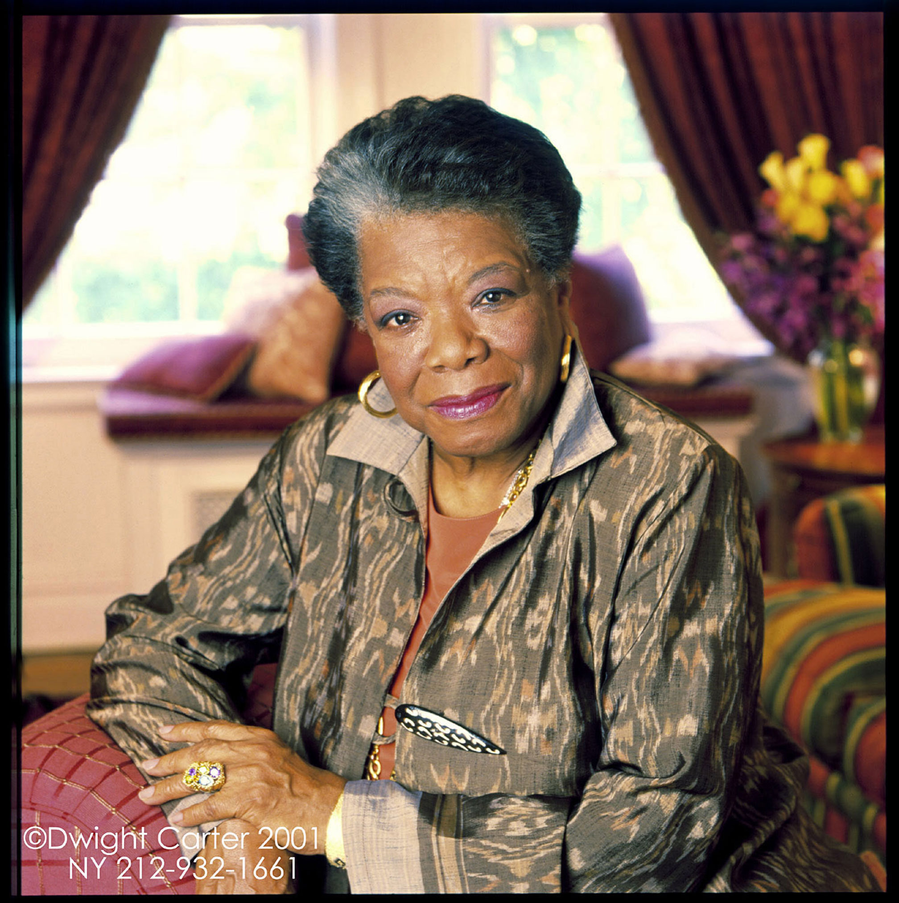

Maya Angelou (4 tháng 4 năm 1928 – 28 tháng 5 năm 2014) là một nhà thơ, tác giả viết hồi ký, diễn viên người Mỹ. Bà cũng là nhân vật quan trọng trong phong trào đấu tranh chống phân biệt chủng tộc và vì công bằng xã hội. Bà đã xuất bản 7 tự truyện, ba cuốn sách tiểu luận, và một số tập thơ, và có có một danh sách các vở kịch, phim ảnh, và chương trình truyền hình kéo dài hơn năm mươi năm. Bà đã nhận được hàng chục giải thưởng và hơn ba mươi bằng tiến sĩ danh dự. Angelou được người ta biết nhiều nhất với loạt bài gồm bảy tự truyện, trong đó tập trung vào thời thơ ấu của bản thân và trải nghiệm đầu trưởng thành. Tác phẩm đầu tiên, I Know Why the Caged Bird Sings (1969) kể về cuộc đời của bà từ bé đến năm 17 tuổi và đã mang lại sự công nhận và hoan nghênh tầm quốc tế.
Tại thị trấn Stamps, Marguerite và Bailey được nuôi nấng bởi bà nội, Annie Henderson, và người chú Willie đã bị liệt nửa người. Annie sở hữu một cửa hàng thực phẩm tại một nơi mà người da đen vẫn còn bị kỳ thị và đe dọa. Ở đây, các hội viên của đảng 3 K thường đốt cây thánh giá lớn, hành hạ và treo cổ vài người da đen trong khi ngoài xã hội, mọi người da đen phải uống nước tại vòi nước dành riêng, phải ngồi phía sau xe buýt và phải vào rạp hát bằng cửa sau. Trong hoàn cảnh xã hội như thế, cô bé Marguerite mơ mộng có được mái tóc vàng, đôi mắt xanh và cô bé buồn tủi vì thân phận của kẻ da đen tóc quăn, cẳng chân lớn, hàm răng thưa mà "khoảng cách có thể gắn được cây viết chì số 2". Bailey và Marguerite theo học ngôi trường Lafayette nghèo khó, ngoài giờ học còn phải phụ giúp vào cửa tiệm thực phẩm, nuôi gà và chăm sóc mấy con heo.
Khi lên 8 tuổi, Margerite trở về thành phố St. Louis, sống với mẹ và bà Vivian thường say xỉn này có một người bạn trai gọi tên là Mr. Freeman, đã đe dọa và hãm hiếp cô bé Marguerite. Sau khi kẻ hung bạo này bị người chú của Marguerite giết chết, cô bé Marguerite đã chìm vào trong một thứ thế giới của sợ hãi và tội lỗi, rồi được trả về sống với bà nội Momma tại thị trấn Stamps khi trước. Dưới sự hướng dẫn của bà nội, Marguerite lấy lại được niềm tin vào cuộc sống và nhờ sự giúp đỡ của bà giáo cao tuổi Bertha Flowers, Marguerite Johnson đã đọc các tác phẩm của nhiều tác giả da trắng như Shakespeare, Kipling, Poe, Thackeray, James Weldon Butler và một số nhà văn da đen như Paul Dunbar, Langston Hughes, W.E.B. Du Bois, James Weldon Johnson.
- * Kịch:
- Cabaret for Freedom (1960), với Godfrey Cambridge
- The Least of These (1966)
- The Best of These (1966)
- Gettin' up Stayed on My Mind (1967)
- Sophocles, Ajax (1974)
- And Still I Rise (1976), đạo diễn
- Moon on a Rainbow Shawl (1978), đạo diễn
- * Tự Truyện:
- I Know Why the Caged Bird Sings (Chim hót trong lồng, 1969)
- Gather Together in My Name (Thu lượm, 1974)
- Singin' and Swingin' and Gettin' Merry Like Christmas (Hát và vui như đêm Giáng sinh, 1976)
- The Heart of a Woman (1981)(1967)
- All God's Children Need Traveling Shoes (1986)
- A Song Flung Up to Heaven (2002)
- 'Mom & Me & Mom (2013)
- * Thơ Ca:
- Just Give Me a Cool Drink of Water 'fore I Diiie (Hãy cho tôi dòng nước lạnh trước khi chưa chết, 1971), 20 bài
- Oh Pray My Wings Are Gonna Fit Me Well (Cầu xin cho tôi đôi cánh, 1975), 36 bài
- And Still I Rise (Và tôi vươn lên, 1978), 32 bài
- Shaker, Why Don't You Sing? (1983), 28 bài
- Poems (Những bài thơ, 1986)
- Now Sheba Sings the Song (1987)
- I Shall Not Be Moved (1990), 32 bài
- On the Pulse of Morning (Nhịp điệp bình minh, 1993), trường ca